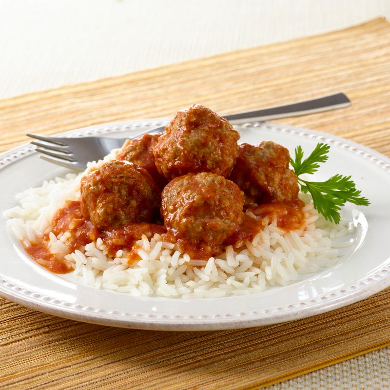

Inicio
Albóndigas

Descripción
Las albóndigas son un platillo clásico y versátil, compuesto por pequeñas bolas de carne sazonada, cocidas en una salsa jugosa. Perfectas para acompañar con arroz, pasta o pan.
Ingredientes (para 4 porciones)
- 500 g de carne molida (res, cerdo o mezcla)
- 1 huevo
- 1/2 taza de pan molido (o migas de pan)
- 1/4 taza de leche
- 11/2 cebolla picada finamente
- 2 dientes de ajo picados
- 1/4 taza de perejil fresco picado
- Sal y pimienta al gusto
- 2 cucharadas de aceite (para freír)
- 2 tazas de salsa de tomate (casera o enlatada)
- 1/2 taza de caldo de pollo o agua
Pasos
- Preparar la mezcla de albóndigas:
-
En un tazón grande, mezcla la carne molida, el huevo, el pan molido, la leche, la cebolla, el ajo, el perejil, la sal y la pimienta. Mezcla bien hasta integrar todos los ingredientes.
- Formar las albóndigas:
- Con las manos limpias, forma pequeñas bolas del tamaño de una nuez con la mezcla de carne.
- Freír las albóndigas:
- Calienta el aceite en una sartén a fuego medio.
-
Fríe las albóndigas hasta que estén doradas por todos lados (unos 2-3 minutos por lado). Retíralas y escúrrelas en papel absorbente.
- Preparar la salsa:
-
En la misma sartén, agrega la salsa de tomate y el caldo de pollo (o agua). Mezcla bien y deja que hierva a fuego medio.
- Cocinar las albóndigas en la salsa:
-
Agrega las albóndigas a la salsa, tapa la sartén y cocina a fuego lento durante 15-20 minutos, o hasta que estén bien cocidas y la salsa haya espesado ligeramente.
- Servir:
- Sirve las albóndigas calientes, acompañadas de arroz, pasta o pan. ¡Disfruta!